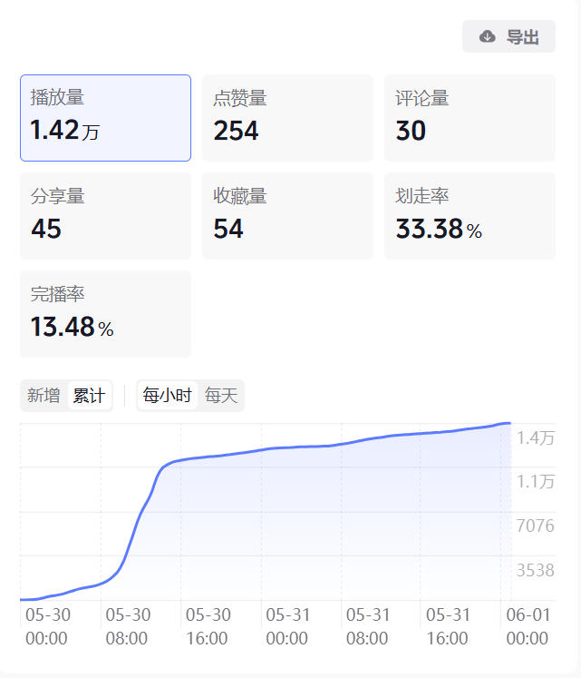

我是茅酉愉，安徽师范大学 2022 级学生，将于 2026 年毕业。专攻短剧编剧方向，擅长民国历史、现代现实、古装甜宠等多题材创作，能够驾驭虐恋、现实向、轻悬疑等多种风格。
每部作品均以"小说 + 剧本"双形态呈现——先以小说体打磨故事肌理，再改编为剧本格式。熟练运用 AI 工具（ChatGPT / Claude）辅助创作流程，具备从故事大纲到分集剧本的完整产出能力。
相信好故事的力量。相信文字能穿越屏幕，触达人心。

"二十年后出狱，他唯一的行李是一只金镯子，和一段再也回不去的时光。"
周荣在狱中度过二十年，出狱时五十八岁，身无分文。曾经的三江口首富如今只能住在城中村的破旧出租屋里。他唯一的随身物品是一只金镯子——那是他当年送给最信任的人胡建仁的。胡建仁替他扛下所有罪名，被判死刑立即执行。周荣在狱中二十年，每晚摩挲这只镯子，却再也没梦到过胡建仁。出狱后，他回到三江口，发现荣城集团的大楼还在但招牌已换，城中村的老墙上还残留着"荣城地产"的旧广告。最终，他戴着镯子走进老巷深处，再也没有出来。
"二十年后周荣出狱了二十年，三江口变了一座城。周荣站在出狱后第一缕刺眼的阳光里，眯起眼看着眼前陌生的世界。他已经在监狱里待了整整二十年，从三十八岁到五十八岁，人生最后的黄金岁月全部消磨在高墙之内。"
📺 此作品曾发布在抖音平台，48小时数据表现优异。
"一根绳子，连住两个人的心跳。黑暗里，他拉一下，意思是'我在'。"
七斋六人夜探藏有边防图的旧宅。王宽和裴景被分到北面巷口。裴景怕黑，在极度的黑暗和恐惧中，王宽从袖口抽出一根细绳，一端系在自己腕上，一端塞进裴景掌心。他说："你害怕的时候，拉一下。我会知道。我拉一下，意思是我在。"整夜，两人通过绳子的拉动传递暗语——轻轻一下是"我在"，两下是"没事"，三下是"小心着凉"。天亮任务结束，裴景把绳子藏进药囊，发现绳子一头系着一个小小的同心结。
"是夜，夜色像墨浓得化不开。七斋六人在巷口站定，风吹过来，带着深秋特有的凉意，把衣角吹得微微扬起。……忽然，黑暗中有人轻轻握了一下她的手。那只手从右侧伸过来，准确得像是能在夜里视物一般，覆在她紧紧抓着衣角的手上，五指合拢，轻轻一握。温热的，干燥的，力道极轻极柔，像是怕吓着她。然后松开了。"
"八千公里路，他从伦敦追到上海，只为找到那个从不回信的人。"
路垚在伦敦工作期间，与上海巡捕房探长乔楚生通信三年。乔楚生每封信都只说"一切安好"，从不透露自己的危险。淞沪会战爆发后，通信中断。路垚收到白幼宁"兄长失联"的电报，毅然买船票回国。他在沦为孤岛的上海找到乔楚生的旧公寓，发现乔楚生把自己从伦敦寄出的所有回信都珍藏在了床头柜里。他还找到一封没写完的信："三土，这辈子遇见你，是我最好的事。"路垚得知乔楚生已参军，在南京保卫战中负伤失踪。他一路向南寻找，最终在一个河边窝棚里找到了奄奄一息的乔楚生，两人在黎明前重逢。
"伦敦今年冬天的雾比往年更浓些。我站在公寓的窗前，手里捏着那封已经翻看过无数遍的信，纸张柔软得像是被体温捂热的布料。窗外泰晤士河的水汽混着煤烟味涌进来，我咳嗽了两声，却没有关窗。我想闻闻这种味道——上海也是这样的。"
"战火隔山海，他收到最后一封信时，那人已经死在八千公里外的桥上。"
民国二十六年，路垚在伦敦留学，与上海的乔楚生保持着书信往来。乔楚生是巡捕房探长，也是青龙帮的乔四爷，他在信中永远只说"一切安好"。淞沪会战爆发后，乔楚生的信断了。路垚等来的却是白幼宁的失联电报。路垚不顾战火辗转回到上海，得知乔楚生早在八月就已牺牲——他主动参军，在炸桥掩护部队撤退时阵亡。路垚在乔楚生的旧公寓里找到了自己从伦敦寄出的所有回信，以及一封没写完的遗书。乔楚生在信中说："路垚，我喜欢你，不是兄弟那种喜欢。"多年后，一本旧书里夹着他们的合照和最后一句话。
"民国二十六年七月的那场雨，下了整整三天。路垚站在伦敦大学学院的实验室里，透过蒙了水雾的玻璃窗望出去。他的手边摊着一份《泰晤士报》，他看见'Shanghai'这个词的时候，钢笔从指间滑落，在白色实验服上划出一道墨痕。"